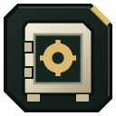
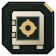

Seifai
Hajin seifai ir pastatai ar kambariai, kuriuose jie stovi.

Safe: Compound FoxtrotŠalia Chang-san Air Base · Seifo vieta. Turinys ir prieinamumas gali keistis. · Apytikslė paieškos zonaB4- Safe: Deadtown houseSeifo vieta. Turinys ir prieinamumas gali keistis. · Apytikslė paieškos zonaB7
- Safe: The CitadelŠalia 14th Political Prison · Seifo vieta. Turinys ir prieinamumas gali keistis. · Apytikslė paieškos zonaC3
- Safe: Compound Charlie, main buildingŠalia Cheongun Village · Seifo vieta. Turinys ir prieinamumas gali keistis. · Apytikslė paieškos zonaD5
- Safe: Compound Charlie, second officeŠalia Cheongun Village · Seifo vieta. Turinys ir prieinamumas gali keistis. · Apytikslė paieškos zonaD5
- Safe: Haejeok Radio StationŠalia Imjin Farmland · Seifo vieta. Turinys ir prieinamumas gali keistis. · Apytikslė paieškos zonaD6
- Safe: Imjin Farmland farmhouseSeifo vieta. Turinys ir prieinamumas gali keistis. · Apytikslė paieškos zonaD8
- Safe: Rice Mill, Hoesik Supply RoomŠalia Imjin Farmland · Seifo vieta. Turinys ir prieinamumas gali keistis. · Apytikslė paieškos zonaD8
- Safe: Cheonwang Peak Array, northwest officeSeifo vieta. Turinys ir prieinamumas gali keistis. · Apytikslė paieškos zonaE6
- Safe: Cheonwang Peak Array, south officeSeifo vieta. Turinys ir prieinamumas gali keistis. · Apytikslė paieškos zonaE6
- Safe: Compound AlphaŠalia Cheonwang Peak Array · Seifo vieta. Turinys ir prieinamumas gali keistis. · Apytikslė paieškos zonaE7
- Safe: Cheonwang Peak Array, server roomSeifo vieta. Turinys ir prieinamumas gali keistis. · Apytikslė paieškos zonaF6
- Safe: Compound BravoŠalia Wolves Stadium · Seifo vieta. Turinys ir prieinamumas gali keistis. · Apytikslė paieškos zonaF8
- Safe: Compound Bravo, containerŠalia Wolves Stadium · Seifo vieta. Turinys ir prieinamumas gali keistis. · Apytikslė paieškos zonaF8
- Safe: NuriGO WestŠalia NuriGo Mall · Seifo vieta. Turinys ir prieinamumas gali keistis. · Apytikslė paieškos zonaG6
- Safe: Compound Echo, underground storeŠalia Hajin River Heights · Seifo vieta. Turinys ir prieinamumas gali keistis. · Apytikslė paieškos zonaG7
- Safe: Wolves StadiumŠalia The Grid · Seifo vieta. Turinys ir prieinamumas gali keistis. · Apytikslė paieškos zonaG7
- Safe: Compound EchoŠalia Hajin River Heights · Seifo vieta. Turinys ir prieinamumas gali keistis. · Apytikslė paieškos zonaG8
- Safe: Compound DeltaŠalia Haneul Nuclear Reactor · Seifo vieta. Turinys ir prieinamumas gali keistis. · Apytikslė paieškos zonaH5
- Safe: Construction ZoneŠalia Songdo Wharf · Seifo vieta. Turinys ir prieinamumas gali keistis. · Apytikslė paieškos zonaH6
- Safe: Haneul Nuclear Reactor, southeastSeifo vieta. Turinys ir prieinamumas gali keistis. · Apytikslė paieškos zonaI5
Žiūrėk žemėlapyje DMZ Tactical programoje